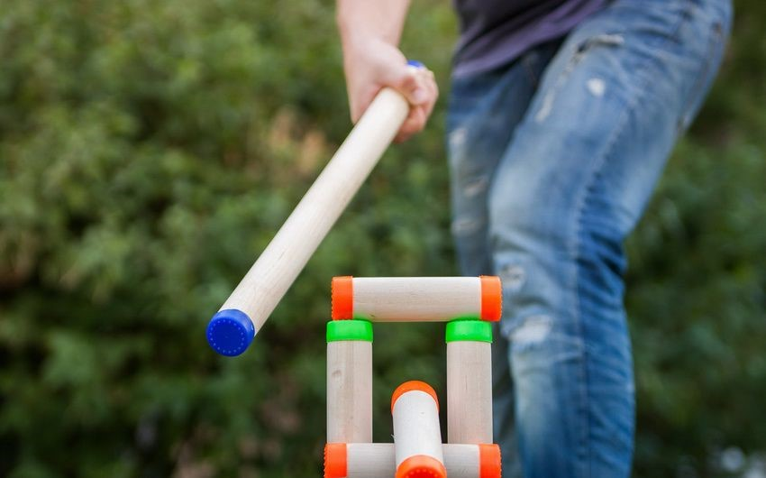

Как играть в городки?

Для изготовления набора для игры в городки Вам потребуется несколько черенков для лопат, которые продаются в хозяйственных магазинах:
- Два черенка – это две биты.
- Еще два черенка нужно распилить на кусочки так, чтобы получилось 10 одинаковых деревянных кусочков – «рюх», нужных для игры. Из этих кусочков – рюх – и строятся фигуры, которые называются «городки». Вот и весь необходимый минимальный набор!